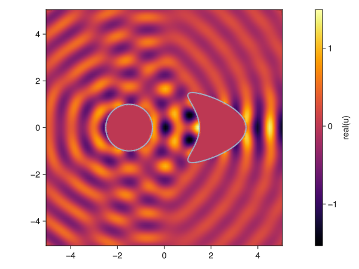

Getting started

- Create a domain and mesh
- Solve a basic boundary integral equation
- Visualize the solution
# TODO: add the description of the tutorial
using Inti
using LinearAlgebra
using StaticArrays
# Physical parameters
k = 2π
pde = Inti.Helmholtz(; dim = 2, k)
# Mesh generation
kite = Inti.parametric_curve(0.0, 1.0) do s
return SVector(2.5, 0) +
SVector(cos(2π * s[1]) + 0.65 * cos(4π * s[1]) - 0.65, 1.5 * sin(2π * s[1]))
end
circle = Inti.parametric_curve(0.0, 1.0) do s
return SVector(-1.5, 0) + SVector(cos(2π * s[1]), sin(2π * s[1]))
end
Γ = kite ∪ circle
msh = Inti.meshgen(Γ; meshsize = 2π / k / 10)
Q = Inti.Quadrature(msh; qorder = 5)
# Operators
S, D = Inti.single_double_layer(;
pde,
target = Q,
source = Q,
compression = (method = :none,),
correction = (method = :dim,),
)
# Solution
θ = 0
d = SVector(cos(θ), sin(θ))
v = map(Q) do q
# normal derivative of e^{ik*d⃗⋅x}
x, ν = q.coords, q.normal
return -im * k * exp(im * k * dot(x, d)) * dot(d, ν)
end ## Neumann trace on boundary
u = (-I / 2 + D) \ (S * v) # Dirichlet trace on boundary
𝒮, 𝒟 = Inti.single_double_layer_potential(; pde, source = Q)
uₛ = x -> 𝒟[u](x) - 𝒮[v](x)
# Visualization
using Meshes
using GLMakie # or your favorite plotting backend for Makie
xx = yy = range(-5; stop = 5, length = 100)
U = map(uₛ, Iterators.product(xx, yy))
fig, ax, hm = heatmap(
xx,
yy,
real(U);
colormap = :inferno,
interpolate = true,
axis = (aspect = DataAspect(), xgridvisible = false, ygridvisible = false),
)
viz!(msh; segmentsize = 2)
Colorbar(fig[1, 2], hm; label = "real(u)")
fig
This page was generated using Literate.jl.